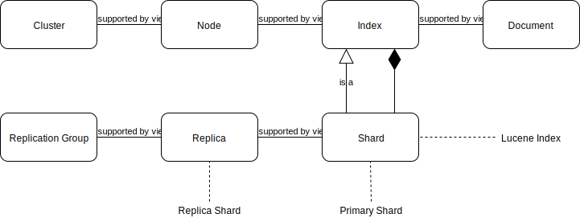

Elastic Stack (formerly ELK) - Elasticsearch
When something goes wrong in an environment, the people trying to fix it mostly start by looking at the log files persisted on the local filesystem of the server. This gets more cumbersome the more server and services participate. Highly distributed applications, developed and deployed as microservices in a cloud environment exacerbate this too. A centralized logging server helps to ease the pain. In this post I’ll talk about the popular Elasticsearch service, which is part of the Elastic Stack, formerly known as ELK stack.
| Date | Change description |
|---|---|
| 2018-01-05 | The first release |
Intro
This is the first part of a multi-part series about the Elastic Stack (formerly the ELK stack). This stack consists of 3 parts:
- storing data with Elasticsearch
- ingesting data with Logstash (and/or Beats)
- visualizing data with Kibana
This post will focus on the first part, Elasticsearch, which uses a schema-less, flexible data model, often called document based. This means you can use your current data as-is and don’t have to transform it into another schema so that Elasticsearch can deal with it.
This post will focus on the log storage and query part and won’t delve into metrics analytics or other use cases you can implement with Elasticsearch. We will also not talk about the x-pack plugins, which would add more functionality.
Set up the environment
To reproduce the steps in this post, you need to have installed locally:
After these prerequisites are fulfilled:
- download the compressed
project source files. - extract the archive
- change to the
envdirectory - start the Vagrant setup
- use Ansible to configure the environment
1 2 3 4 5 | $ wget http://www.markusz.io/_downloads/elastic-stack-elk-elasticsearch.tar.gz
$ tar -zxvf elastic-stack-elk-elasticsearch.tar.gz
$ cd env
$ vagrant up
$ ansible-playbook playbook.yml
|
Your (truncated) output should look similar to this:
1 2 3 4 5 6 7 8 9 10 11 12 13 14 15 16 17 18 19 20 21 22 23 24 25 26 27 28 29 | [...]
PLAY RECAP ********************************************************************
app1 : ok=10 changed=6 unreachable=0 failed=0
app2 : ok=10 changed=6 unreachable=0 failed=0
es1 : ok=21 changed=17 unreachable=0 failed=0
Thursday 04 January 2018 16:29:04 +0100 (0:00:01.319) 0:02:06.741 ******
===============================================================================
Install python package manager. ---------------------------------------- 50.79s
Install JAVA runtime. -------------------------------------------------- 24.73s
Check if Elasticsearch is up an running. ------------------------------- 11.50s
Wait for SSH to be ready. ---------------------------------------------- 10.36s
Download file with checksum check. -------------------------------------- 9.31s
Install app requirements. ----------------------------------------------- 4.87s
Ensure system package cache is updated. --------------------------------- 4.46s
Unarchive the elasticsearch archive. ------------------------------------ 1.43s
Run example app. -------------------------------------------------------- 1.32s
Run elasticsearch as daemon. -------------------------------------------- 1.22s
Add our servers to the hosts file. -------------------------------------- 0.99s
Deploy example app to servers. ------------------------------------------ 0.88s
Ping each other via DNS names. ------------------------------------------ 0.77s
Gather some facts for later. -------------------------------------------- 0.62s
Creating user for Elasticsearch group. ---------------------------------- 0.37s
Create a group for Elasticsearch. --------------------------------------- 0.32s
Disable all swapping. --------------------------------------------------- 0.32s
Create logging directory. ----------------------------------------------- 0.31s
Set maximum number of memory map areas (permanently). ------------------- 0.29s
Set number of open file descriptors (permanently). ---------------------- 0.28s
|
Note
After you decided that you don’t need this environment anymore,
you can remove it with vagrant destroy -f
This created a virtualized environment which looks like this:

- one central logging server
es1 - two application servers
app1andapp2 - Ubuntu 16.04 as operating system
- Java Open JDK in version 8
- Elasticsearch in version 6.1
While the setup goes on for a minute or two, let’s have a look at a few basic terms and concepts of Elasticsearch.
Terms and Concepts
Let’s start with an overview of the basic concepts [4]. I’ll explain the details after this image:
{kind=link}
The main entity we’re interested in is the Document. This is the schema-less entity we want to store in Elasticsearch. In our case, as this post focuses on centralized logging, this is one single log entry.
Elasticsearch stores Documents in an Index and every Index can store multiple Documents. The Index is the entity which provides the ability to search Document objects.
Each Elasticsearch service is considered a Node. This Node is not necessarily bound to one hardware server or virtual machine. Each Node is in other words, an Elasticsearch instance. Each one can have 0 to N Index objects to scale out the management of Document objects.
For further horizontal scale out, each Node can be part of a Cluster. Each Cluster consists of 1 to N Node objects. A single-node setup is still a Cluster (with only 1 Node). There are master nodes in a cluster, which determine how information gets replicated, but I won’t dive into it in this post.
As described before, an Index is the (abstract) entity which stores our documents. To be precise, an Index consists of Shards. These Shard objects are Index objects themselves and can therefore store Documents. This concept enables splitting out the Documents into smaller segments. One Shard is in fact the Lucene Index [5], the search engine encapsulated by Elasticsearch. Such shards can be called primary shards.
The Shard objects can be replicated (copied) into so called Replica entities (or replica shards). A set of Replica objects are collected in a Replication Group. Those replica shards enable High Availability (HA) and Data Recovery (DR). Hopefully I can dive deeper into these capabilities in a later post.
After these basic terms and concepts are described, let’s finally interact with Elasticsearch in our environment.
Basic Interaction with Elasticsearch
After the setup by the Ansible playbook, we can interact with the
REST API of Elasticsearch via curl on our local machine. Port 9200 is
the default:
1 2 3 4 5 6 7 8 9 10 11 12 13 14 15 16 | $ curl 192.168.78.11:9200
{
"name" : "hMDFApt",
"cluster_name" : "elasticsearch",
"cluster_uuid" : "kEM4Oz-PQQ-98ZgdOxGOdw",
"version" : {
"number" : "6.1.1",
"build_hash" : "bd92e7f",
"build_date" : "2017-12-17T20:23:25.338Z",
"build_snapshot" : false,
"lucene_version" : "7.1.0",
"minimum_wire_compatibility_version" : "5.6.0",
"minimum_index_compatibility_version" : "5.0.0"
},
"tagline" : "You Know, for Search"
}
|
This JSON response shows a few things of the previous section:
name: The name of the Node. I used the default, which randomly generates a unique one. This is configurable.cluster_name: The name of the Cluster this Node is in. Again, I used the default name.number: The version of the Elasticsearch Node.lucene_version: The version of the search engine encapsulated by Elasticsearch.
The REST API has some useful common options [6]:
pretty=true: to beautify the JSON outputformat=yaml: use YAML instead of JSON as outputerror_trace=trueto show a more verbose error tracefilter_path=<values>to reduce the response
We will use some of these later.
Health Check
Let’s do a basic health check of our single-node cluster.
We use format=yaml to have an output which is easier to read:
1 | $ curl 192.168.78.11:9200/_cat/health?format=yaml
|
The output, formatted as YAML:
1 2 3 4 5 6 7 8 9 10 11 12 13 14 15 | ---
- epoch: "1514998054"
timestamp: "16:47:34"
cluster: "elasticsearch"
status: "green"
node.total: "1"
node.data: "1"
shards: "0"
pri: "0"
relo: "0"
init: "0"
unassign: "0"
pending_tasks: "0"
max_task_wait_time: "-"
active_shards_percent: "100.0%"
|
Elasticsearch uses a traffic light system with green, yellow and red.
As the status is green, we’re good, the node works fine.
List Nodes
Any real live production system which uses Elasticsearch will most likely have a cluster with multiple nodes in it. In those setups it might come in handy to list all nodes:
1 | $ curl 192.168.78.11:9200/_cat/nodes?format=yaml
|
The output, formatted as YAML:
1 2 3 4 5 6 7 8 9 10 11 | ---
- ip: "192.168.78.11"
heap.percent: "6"
ram.percent: "63"
cpu: "0"
load_1m: "0.00"
load_5m: "0.00"
load_15m: "0.00"
node.role: "mdi"
master: "*"
name: "hMDFApt"
|
Remember, we have a single-node system, so only this one should get listed:
ip: as described in the previous section Set up the environmentmaster: this node is a master node in this cluster. I’ll dive deeper into that in a later post.name: the name of this node
If the cluster would contain more nodes, they would be shown here with YAML list style (see Block Sequence at [7]).
Minimal Example
Let’s create a very small document:
1 2 3 4 5 | $ curl -X PUT '192.168.78.11:9200/my-index/my-type/1?pretty' \
-H 'Content-Type: application/json' \
-d '{
"my_document" : "my document content"
}'
|
This HTTP PUT call does multiple things:
- it creates an Index called
my-index - it creates a Type in that Index, called
my-type - it adds the Document (the JSON for parameter
-d) to that Index - it assigns the ID
1to that document - it increments the version number of that created (or updated) Document
- it specifies, that the HTTP response should be
prettyjson
It becomes more clear when we look at the HTTP response:
1 2 3 4 5 6 7 8 9 10 11 12 13 14 | {
"_index" : "my-index",
"_type" : "my-type",
"_id" : "1",
"_version" : 1,
"result" : "created",
"_shards" : {
"total" : 2,
"successful" : 1,
"failed" : 0
},
"_seq_no" : 0,
"_primary_term" : 1
}
|
Before going into more detail, let’s query this document with another REST API call:
1 | $ curl -X GET '192.168.78.11:9200/my-index/my-type/1?pretty'
|
This call gives us this JSON response:
1 2 3 4 5 6 7 8 9 10 | {
"_index" : "my-index",
"_type" : "my-type",
"_id" : "1",
"_version" : 1,
"found" : true,
"_source" : {
"my_document" : "my document content"
}
}
|
These are the basic steps to store and retrieve documents in Elasticsearch.
Note
For centralized logging, where log entries are considered immutable, the versioning support is rather uninteresting. In case you got curious, take a look at [8].
It’s also worth nothing that the automatic index creation can be disabled if you see the need for it [9]. You’re also allowed to create your indices beforehand [10].
List Indices
Now that we have an (automatically created) index, we can query it:
1 | $ curl -X GET 192.168.78.11:9200/_cat/indices?format=yaml
|
Again, we use the format=yaml simply to have a more readable output:
1 2 3 4 5 6 7 8 9 10 11 | ---
- health: "yellow"
status: "open"
index: "my-index"
uuid: "u4WB1ztWT1GVXGOI0OoJnQ"
pri: "5"
rep: "1"
docs.count: "1"
docs.deleted: "0"
store.size: "4.5kb"
pri.store.size: "4.5kb"
|
This is the one Index we created automatically by adding a
document to it previously.
We also see the impact of primary shards and replication shards
in this response, namely the fields pri and rep, as discussed
in the previous section Terms and Concepts.
Now that we know the basic interaction with Elasticsearch, let’s use it as a centralized logging server in the next section.
Logging to Elasticsearch
The Ansible playbook also deploy a small example application to
the application servers app1 and app2 of our environment.
It’s a Python Flask app [11] which uses Python’s logging
library [12]. Flask enables us to create a REST API to interact
with the apps. The logging library gives us a means to write a custom
log handler which emits log records into Elasticsearch. Here’s the code first,
then I explain the important parts:
1 2 3 4 5 6 7 8 9 10 11 12 13 14 15 16 17 18 19 20 21 22 23 24 25 26 27 28 29 30 31 32 33 34 35 36 37 38 39 40 41 42 43 44 45 46 47 48 49 50 51 52 53 54 55 56 57 58 59 60 61 62 63 64 65 66 67 68 69 70 71 72 73 74 75 76 77 78 79 80 81 82 83 84 85 86 87 88 89 90 | #!/usr/bin/env python
from flask import Flask
import json
import logging.handlers
import platform
import requests
HOSTNAME = platform.node()
# ======================================================================
# Custom logging handler for Elasticsearch
# ======================================================================
class ElasticsearchHandler(logging.Handler):
def __init__(self, url):
super(ElasticsearchHandler, self).__init__()
self.url = url
def emit(self, record):
self.format(record)
headers = {'content-type': 'application/json'}
payload = {
'module': record.module,
'timestamp': record.asctime,
'level': record.levelname,
'message': record.message,
'host': HOSTNAME,
}
r = requests.post(self.url,
data=json.dumps(payload),
headers=headers)
print("Log record emit result: %s" % r.status_code)
# ======================================================================
# Set up logging
# ======================================================================
formatter = logging.Formatter('%(asctime)s - %(name)s - '
'%(levelname)s - %(message)s')
http_handler = ElasticsearchHandler("http://es1:9200/app/logs/")
http_handler.setFormatter(formatter)
file_handler = logging.handlers.RotatingFileHandler("app.log",
maxBytes=10240,
backupCount=4)
file_handler.setFormatter(formatter)
logger = logging.getLogger(__name__)
logger.setLevel(logging.DEBUG)
logger.addHandler(http_handler)
logger.addHandler(file_handler)
# ======================================================================
# REST API with Flask
# ======================================================================
app = Flask(__name__)
@app.route("/")
def hello():
return "Hello World!\n"
@app.route("/logging/debug")
def log_debug_message():
logger.debug('debug message')
return "Logged debug message.\n"
@app.route("/logging/info")
def log_info_message():
logger.info('info message')
return "Logged info message.\n"
@app.route("/logging/warning")
def log_warning_message():
logger.warning('warning message')
return "Logged warning message\n"
# ======================================================================
# MAIN
# ======================================================================
if __name__ == '__main__':
app.run(host='0.0.0.0')
|
The class ElasticsearchHandler is a (very rudimentary) logging handler
which can be added to a logger. When the logger logs a record, the added
handlers can emit them to different targets. This class emits the log
record to our node on server es1.
This custom logging handler is also responsible for putting together the
payload to send to Elasticsearch. We use the requests package to call
the REST API of Elasticsearch, like we did earlier with curl commands.
We use a Formatter for our log records.
We configure the logging handler with an Elasticsearch Index and Type by
specifying the URL /app/logs/. This means, an Index app gets
automatically created if it doesn’t exist yet.
As we don’t want to rely on the centralized logging only, which might
suffer from intermittent network connectivity issues, we log into a
file on the local filesystem too. There will be a rotated log file
app.log [13] on each of the application servers.
After that, we define the URL routing for our REST API by using Flask
decorators. For example, we will have a route /logging/debug,
which does nothing else but creating a log record with DEBUG
log level and a rather useless message. It also returns a string we
will get as a response when calling our app’s REST API.
At last, we run the app and let it listen on all network devices,
so it can be reached by the private IP addresses of the virtual machines.
The default port for that is 5000.
Interact with our app
1 2 3 4 5 6 7 8 9 10 | $ curl -X GET 192.168.78.12:5000/
Hello World!
$ curl -X GET 192.168.78.12:5000/logging/debug
Logged debug message.
$ curl -X GET 192.168.78.12:5000/logging/info
Logged info message.
$ curl -X GET 192.168.78.12:5000/logging/warning
Logged warning message
$ curl -X GET 192.168.78.13:5000/logging/info # app2 server
Logged info message.
|
We used curl to call our app’s REST API on port 5000 with the
routing we specified with Flask. If we did everything correct
there should be log files on the application servers:
1 2 3 4 5 6 7 8 9 | $ vagrant ssh app1 -c "cat /opt/example-app/app.log"
2018-01-04 19:32:24,204 - __main__ - DEBUG - debug message
2018-01-04 19:32:47,899 - __main__ - INFO - info message
2018-01-04 19:32:51,147 - __main__ - WARNING - warning message
Connection to 127.0.0.1 closed.
$
$ vagrant ssh app2 -c "cat /opt/example-app/app.log"
2018-01-04 19:35:36,504 - __main__ - INFO - info message
Connection to 127.0.0.1 closed.
|
We see that the log file has the format as we specified in the app.
Search our log entries
Let’s use our knowledge from the previous sections to check if there is a new Index created:
1 | $ curl -X GET 192.168.78.11:9200/_cat/indices?format=yaml
|
1 2 3 4 5 6 7 8 9 10 11 12 13 14 15 16 17 18 19 20 21 | ---
- health: "yellow"
status: "open"
index: "app"
uuid: "N6ORz3afRLWZxoogAjAYDQ"
pri: "5"
rep: "1"
docs.count: "4"
docs.deleted: "0"
store.size: "24.3kb"
pri.store.size: "24.3kb"
- health: "yellow"
status: "open"
index: "my-index"
uuid: "u4WB1ztWT1GVXGOI0OoJnQ"
pri: "5"
rep: "1"
docs.count: "1"
docs.deleted: "0"
store.size: "4.6kb"
pri.store.size: "4.6kb"
|
Yes, there is our new index called app and our four documents are correctly counted as well.
In the minimal example in a previous chapter, we had the ID to query the document. We didn’t do that this time, as we don’t want to bother with managing IDs when dealing with log records. We did let Elasticsearch assign IDs by itself. So we need to use the search API [14]:
1 | $ curl -X GET 192.168.78.11:9200/app/_search?pretty=true
|
1 2 3 4 5 6 7 8 9 10 11 12 13 14 15 16 17 18 19 20 21 22 23 24 25 26 27 28 29 30 31 32 33 34 35 36 37 38 39 40 41 42 43 44 45 46 47 48 49 50 51 52 53 54 55 56 57 58 59 60 61 62 63 64 65 66 67 68 | {
"took" : 60,
"timed_out" : false,
"_shards" : {
"total" : 5,
"successful" : 5,
"skipped" : 0,
"failed" : 0
},
"hits" : {
"total" : 4,
"max_score" : 1.0,
"hits" : [
{
"_index" : "app",
"_type" : "logs",
"_id" : "Lc2rwmABVxyRMIKP804k",
"_score" : 1.0,
"_source" : {
"timestamp" : "2018-01-04 19:35:36,504",
"message" : "info message",
"host" : "app2",
"module" : "app",
"level" : "INFO"
}
},
{
"_index" : "app",
"_type" : "logs",
"_id" : "K82pwmABVxyRMIKPYE5h",
"_score" : 1.0,
"_source" : {
"timestamp" : "2018-01-04 19:32:47,899",
"message" : "info message",
"host" : "app1",
"module" : "app",
"level" : "INFO"
}
},
{
"_index" : "app",
"_type" : "logs",
"_id" : "LM2pwmABVxyRMIKPbU4P",
"_score" : 1.0,
"_source" : {
"timestamp" : "2018-01-04 19:32:51,147",
"message" : "warning message",
"host" : "app1",
"module" : "app",
"level" : "WARNING"
}
},
{
"_index" : "app",
"_type" : "logs",
"_id" : "Ks2pwmABVxyRMIKPBE5J",
"_score" : 1.0,
"_source" : {
"timestamp" : "2018-01-04 19:32:24,204",
"message" : "debug message",
"host" : "app1",
"module" : "app",
"level" : "DEBUG"
}
}
]
}
}
|
These are the four log records we sent as documents to Elasticsearch with the help of your custom logging handler in our example app.
Summary
We set up an environment with a single-node instance of Elasticsearch, a data store for documents. In our case, we use it as centralized logging store. We used an example application to show the interaction between application logs and the storing and querying of log records.
Alternatives could be a centralized logging approach with rsyslog [15]. I most likely won’t do a comparison between the two approaches.
The REST API of Elasticsearch can do much more than I showed here. For example:
- calculate the
_scoreby providingmatchcriteria - use clauses with
must,must_notandshould - create aggregations with
aggsandavg
For GUI dashboards, which show the current (and historic) state of your environment, these REST APIs provide a lot of possibilities. We will dive more in details when we talk about Kibana, the GUI component of the Elastic Stack.
The next post in this series will talk about Logstash, which makes our (shaky) custom logging handler obsolete.
References
| [1] | https://www.vagrantup.com/docs/installation/ |
| [2] | http://docs.ansible.com/ansible/latest/intro_installation.html |
| [3] | https://www.virtualbox.org/wiki/Downloads |
| [4] | https://www.elastic.co/guide/en/elasticsearch/reference/6.1/_basic_concepts.html |
| [5] | https://lucene.apache.org/ |
| [6] | https://www.elastic.co/guide/en/elasticsearch/reference/6.1/common-options.html |
| [7] | http://www.yaml.org/spec/1.2/spec.html#id2797382 |
| [8] | https://www.elastic.co/guide/en/elasticsearch/reference/6.1/docs-index_.html#index-versioning |
| [9] | https://www.elastic.co/guide/en/elasticsearch/reference/6.1/docs-index_.html#index-creation |
| [10] | https://www.elastic.co/guide/en/elasticsearch/reference/6.1/indices-create-index.html |
| [11] | http://flask.pocoo.org/ |
| [12] | https://docs.python.org/2/howto/logging.html#logging-basic-tutorial |
| [13] | https://docs.python.org/2/library/logging.handlers.html#logging.handlers.RotatingFileHandler |
| [14] | https://www.elastic.co/guide/en/elasticsearch/reference/current/search.html |
| [15] | http://www.rsyslog.com/ |